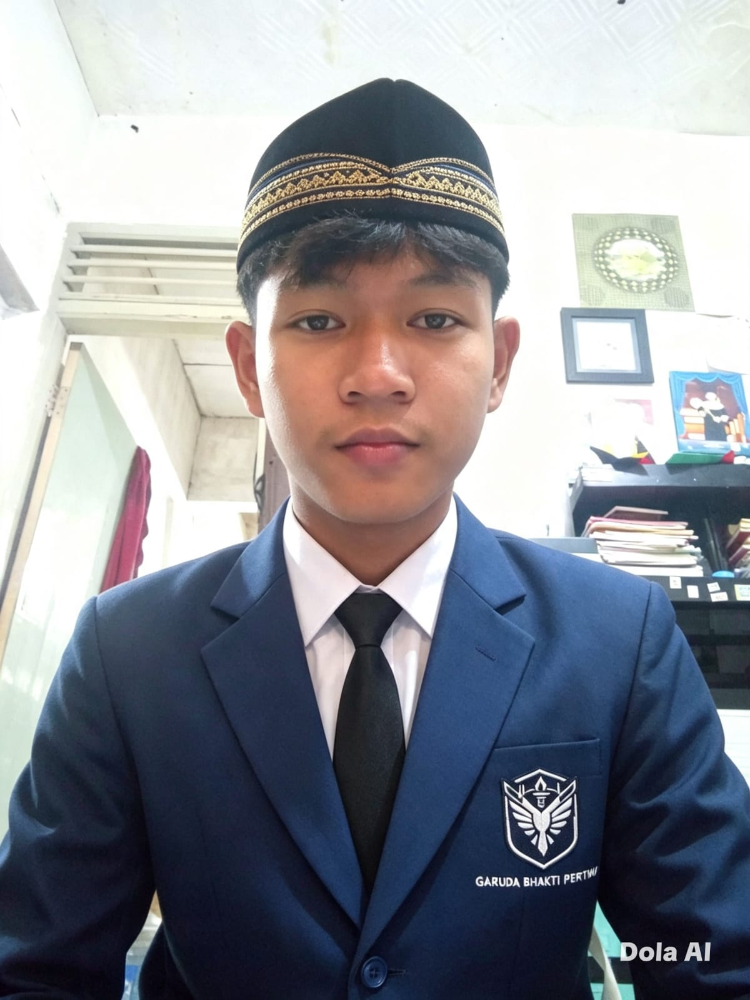
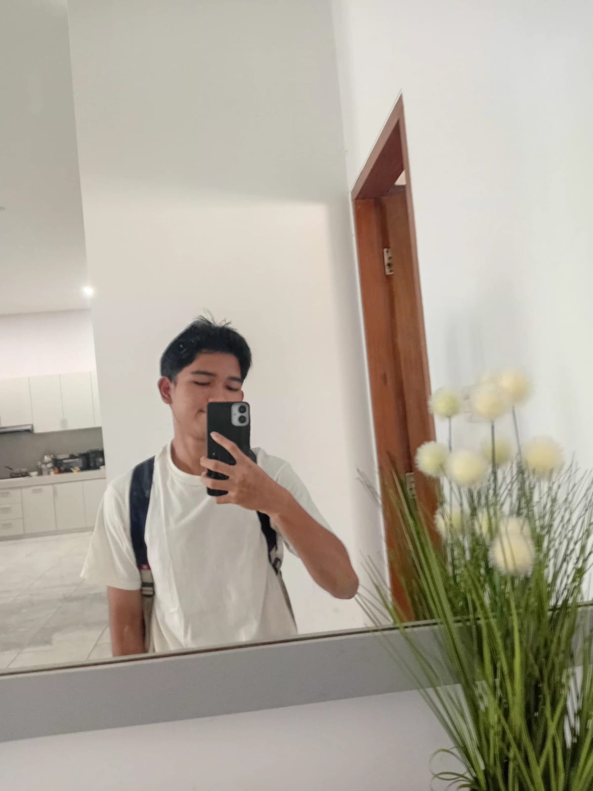

Kepala Yayasan
Drs. Josep Guardiola
Manajemen Sekolah
Kepala sekolah
Pimpinan yang membawa visi dan misi sekolah ke arah yang lebih baik.
Manajemen Sekolah
Profil Sekolah
Orang-orang yang hadir untuk mendampingi perjalanan belajar, mengembangkan potensi, dan memberikan layanan terbaik bagi seluruh warga sekolah.
Tenaga Pendidik
Guru SMA Garuda Bhakti Pertiwi berperan sebagai pendidik, pembimbing, dan teladan bagi siswa.

Manajemen Sekolah

Matematika dan Sains

Bahasa Indonesia

Bahasa Inggris

Kebugaran

Agama

Kebugaran

Bahasa Sunda

Bahasa Inggris

Seni dan Budaya

TIK
Staff Tata Usaha
Staff tata usaha memastikan kebutuhan administrasi dan layanan harian sekolah berjalan tertib.

Kepala Tata Usaha
Administrasi Akademik

Administrasi Keuangan

Pengelola Sarana

Administrasi Perpustakaan
Tenaga Kependidikan
Tenaga tata usaha memastikan kebutuhan administrasi dan layanan harian sekolah berjalan tertib.
Koordinasi administrasi dan layanan umum sekolah.
Pengelolaan data siswa, surat akademik, dan arsip pembelajaran.
Pengelolaan administrasi keuangan sekolah secara tertib dan transparan.
Perawatan fasilitas, inventaris, dan kebutuhan operasional sekolah.
Komitmen Layanan
Guru dan staf bekerja sebagai satu tim untuk menciptakan lingkungan sekolah yang ramah, aman, dan mendukung setiap siswa mencapai potensi terbaiknya.